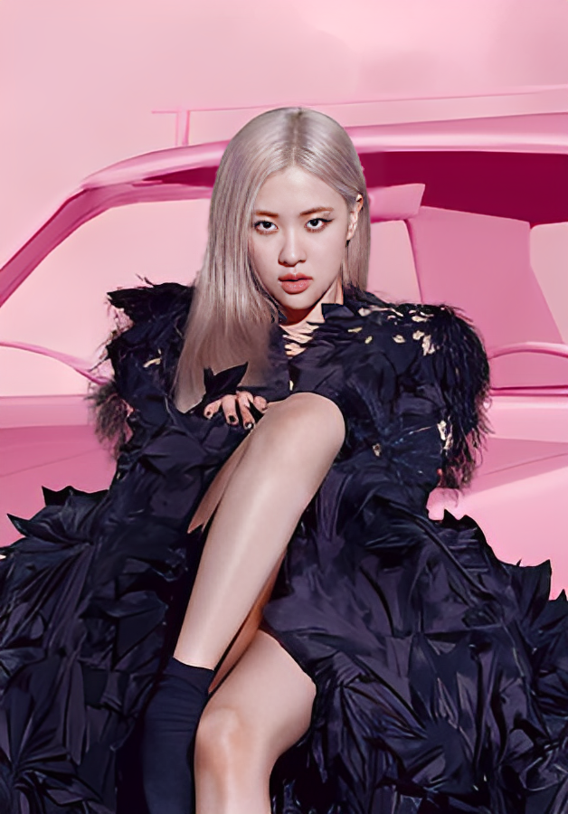

 Rose (full name: Park Chaeyoung), commonly known as Rosé, is a South Korean singer, songwriter, and member of the K-pop girl group BLACKPINK. She was born on February 11, 1997, in Auckland, New Zealand, and raised in Melbourne, Australia. Rosé joined YG Entertainment as a trainee in 2012 and made her debut as a member of BLACKPINK in 2016. Rosé is fluent in English and learned Korean after moving to South Korea to participate in the trainee program. Rosé also collaborates with various of brands such as Yves Saint Laurent, Tiffany & Co.
Rosé released her solo album, R, in March 2021, featuring the songs "On the Ground" and "Gone."